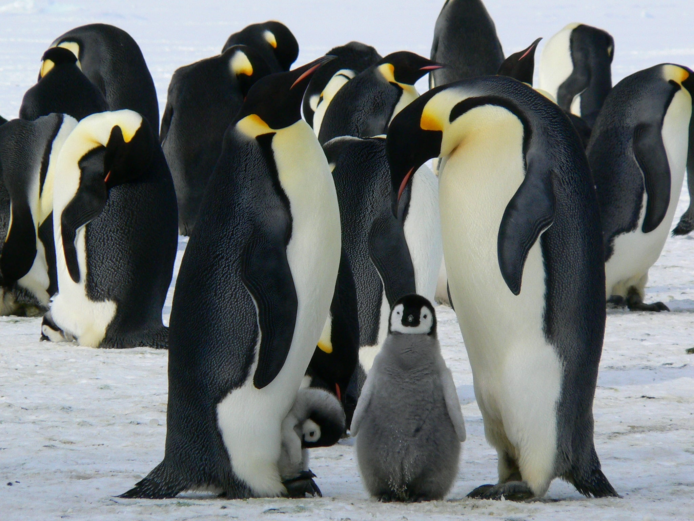

A pingvinek valahol a madarakhoz tartoznak, mivel szárnnyal rendelkeznek, de ezeket csak víz alatti repülésre (úszásra) használják, repülni nem tudnak.

A pingvinek lehetnek legfeljebb 115-120cm magasak, és legkisseb 40centi alacsonyak. A pingvinek könnyű uszástechnikájuk és szárnyuk miatt vízben akár 36km/h sebességgel is úszhatnak és akár 500méter mélyre merülhetnek.
Tudj meg többet| Pingvinfaj | Hol él | Magasság |
|---|---|---|
| Császárpingvin | Antarktisz | Valaha élt legmagasabb 160cm |
| Koronás pingvin | Dél-Amerika | Atlagosan 100cm körüliek |
| Fjordlandi pingvin | Új-Zéland | Legkisebb 30-33cm |